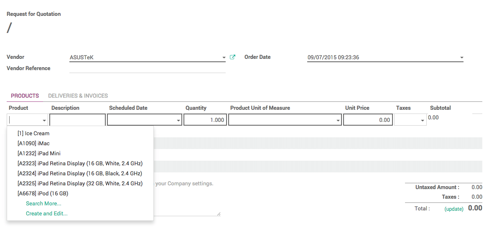
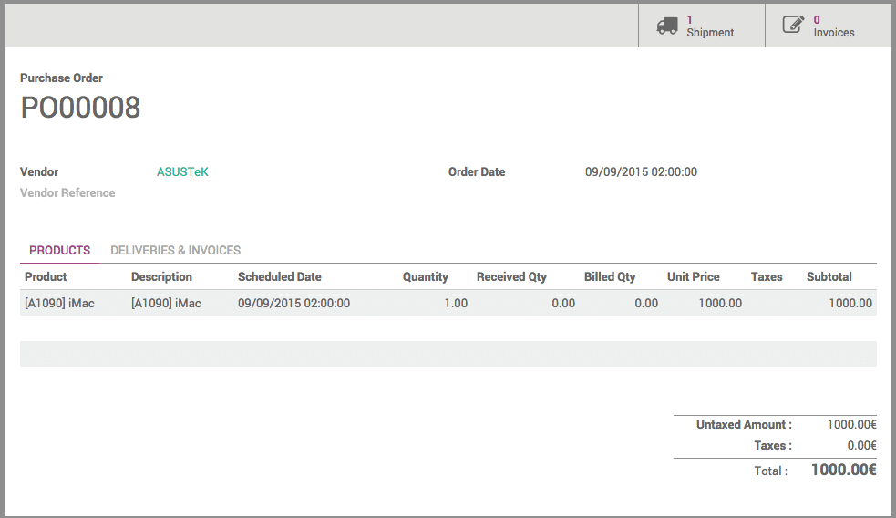

For most of your everyday purchases, chances are you already know where to purchase and at what price. For these cases, a simple Purchase Order (PO) will allow you to handle the whole process.
In Odoo, a purchase order can be created as is, but can also be the result of a Request for Quotation or of a Purchase Tender. Therefore, every purchase made in Odoo has a PO.
The PO will generate an invoice, and depending on the contract with your supplier, you will be required to pay the invoice before or after delivery.
Install the Purchase Management application
From the Apps application, search and install the Purchase Management application.

Creating a Purchase Order
In the Purchases app, open the Purchase menu and click on Purchase Orders.
In the Purchase Orders window, click on Create.

From the new window, insert the Vendor and type in the Order Date.
In the Products section, click on Add an item.
Select your product from the list and add a description if necessary.
The Scheduled Date menu corresponds to the expected delivery date.
Type in the quantity which you wish to purchase, then click on Save and on Confirm Order.
Note
If you wish to go through the complete flow and create a Request for Quotation for this order, refer to the document on How to create a Request for Quotation?
As you can see, the status of the PO has switched to Purchase Order.

Registering invoice, payments and receiving products
Depending on the contract you have with your supplier, you can either pay for the purchase upon delivery of the goods, or get the goods delivered after payment.
Payment upon or after reception
Still from your purchase order, click on Receive Products.
In the next page, check that the number of products received corresponds to the number ordered, then manually enter the delivered quantity and click on Validate.
Go back to the PO. In the PO, a Shipment and an Invoice button have appeared.

Click on the Invoices button, then click on Validate. The invoice is now registered in the system. Click on Register Payment, insert the detail of the payment, and click on Validate.
Your products are now ready for picking and storage, and the invoice is marked as paid.
Upfront payment
From the Purchase Order page, open the Invoices tab, then click on Create.
In the next page, click on Validate. The invoice is now registered in the system. Click on Register Payment, insert the detail of the payment, and click on Validate.

Go back to the PO. In the PO, a Shipment tab and an Invoice tab have appeared.

Click on Receive Products, then in the new page, click on Validate.

A window will appear, asking if you wish to process every item at once. Click on Apply.
Your products are now ready for picking and storage, and the invoice is marked as paid.